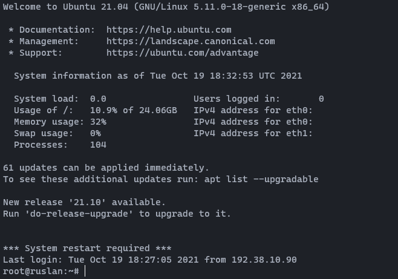

Guide til opsætning af NodeJS server med eget domæne
GitHub PRO
Når man er studerende så tilbyder GitHub GitHub PRO gratis, samt nogle forskellige produkter gratis. herunder domæner og 100$ til DigitalOcean.
For at få GitHub PRO, skal du gå ind på det her link og trykke på "Sign up for Student Developer Pack".
DigitalOcean - Server Opsætnings Guide
DigitalOcean er en hjemmeside som tilbyder virtuelle maskiner hvor man kan køre hjemmeside serverer på og meget andet.
Når du har fået GitHub PRO kan du gå ind på DigitalOcean og følge deres vejledning til opretning af bruger.
Hvis du har fulgt instruktionerne rigtigt burde din projects side se sådan her ud:

Klik nu på den grønne create knap, og klik derefter på droplets, så burde du komme ind på denne side:

Vælg ubuntu, og en basic plan. Derefter rul ned til "Choose a datacenter region", her vælger du Frankfurt:

Herefter skal du vælge et password og et navn til din server:

Når du har fulgt punkterne her, kan du nederst på siden trykke "Create droplet". Nu har du din egen server!
Name.com - Domæne Guide
Name.com tilbyder 1 års gratis domæne til studerende med en GitHub Student Developer Pack.
Opret en konto med din GitHub på Name.com og følg instuktionerne på hjemmesiden.
Hvis du har gjort alting rigtigt burde din account side gerne se sådan her ud:

Klik på dit domæne navn, så får du nogle flere informationer og indstillinger:

Når du er inde på details siden, så skal du klikke på "Manage DNS Records" under Domain Details

Her fortæller du hvilken ip dit domæne skal peje hen på når at folk skriver det ind i deres browser. I feltet ANSWER skal du skrive din DigitalOcean Servers IP adresse. Du kan finde IPen under Droplets på din DigitalOcean side:

Nu kan folk komme ind på din hjemmeside! Nu skal den bare skrives:)
SSH - Fjernforbindelses Guide
Nu har du lavet en server, en NodeJS application og et domæne. Og nu skal du have koblet din NodeJS application til din server. Denne guide fortæller dig hvordan du opretter en SSH forbindelse til din server, hvor du vil køre din NodeJS application på
Du kan oprette forbindelse til din server, ved at skrive ssh root@mydomain.com i en terminal. Hvis du bruger windows, kan du bruge PowerShell. Jeg kan anbefale at du installere WSL2 på din windows maskine:)

Du vil blive bedt om at skrive adgangskoden til serveren (adgangskoden er den som du lavede til din DigitalOcean Droplet).
Hvis du ser en besked om nogle SSH Keys eller noget lignende når du opretter forbindelse, så skal du bare skrive yes
Når du har oprettet en SSH forbindelse til din server, burde du se noget lignende dette:
Nu er du inde på din DigitalOcean Droplet med en SSH forbindelse!
Server Guide
I denne guide vil jeg fortælle hvordan opsætter en NodeJS application med Express, PM2 og NGINX
Først skal du oprette forbindelse til din server med SSH.
NPM(Node Package Manager)
Første gang du kommer ind på din server, har den ikke alle redskaberne til at lave din NodeJS application, derfor skal vi lige installere dem.
Vi starter med NPM:
I din terminal skal du skrive følgende:
apt install npm
Hvis den giver dig en error, så prøv at skrive:
apt install npm --fix-missing
Hvis det hele er gået efter planen burde det være installeret nu, du kan tjekke med denne kommando:
npm -v
Hvis du får et version nummer, er det installeret korrekt.
PM2
Det kan være du har flere applicationer, det kan være svært at holde styr på. Derfor installere vi PM2 som er en daemon process manager.
Installationen er lige frem:
npm install pm2 -g
Dette installere PM2 globalt.
Hvis du skriver pm2 -v får du et version nummer og så er PM2 installeret korrekt.
NGINX
NGINX er et stykke software som kan forbinde eksterne porte til dine interne porte, f. eks. 443 -> 3000.
Installationen til NGINX er lidt mere kompliceret end de andre ting vi har installeret. Men bare følg denne guide, så burde det gå:)
Først navigere til /etc/apt/sources.list.d/:
cd /etc/apt/sources.list.d/
Opret herefter filen nginx.list:
touch nginx.list
hvis du nu skriver ls, så burde du se filen ovenover.
Gå nu ind i filen med nano.
nano nginx.list
Sæt nu det her ind:
deb http://nginx.org/packages/ubuntu/ bionic nginx
deb-src http://nginx.org/packages/ubuntu/ bionic nginx